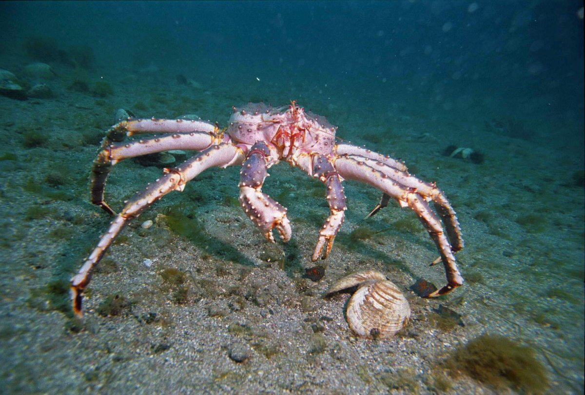
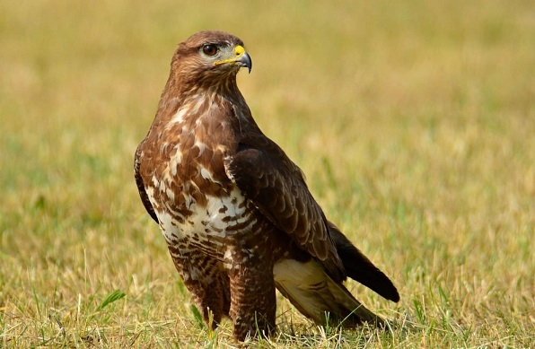
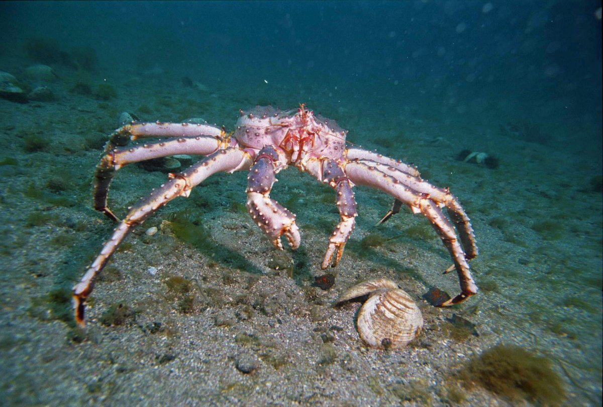
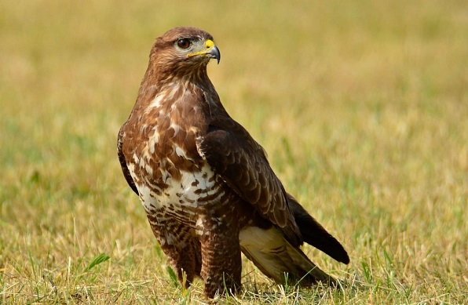
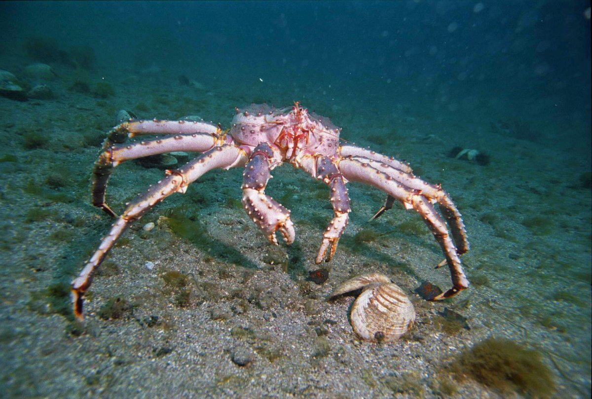
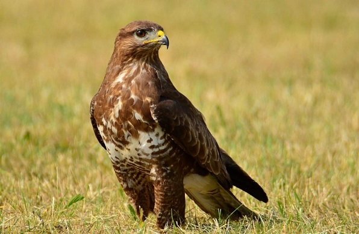

.png "значок")
Дальний Восток – это безграничное побережье, очаровательная амурская тайга и долины гейзеров. На огромных площадях живут разные птицы, редкие виды диких кошек, парнокопытных, а также несколько подвидов медведей. Этот край очаровывает с первого взгляда и восхищает интересным тандемом северных и южных обитателей. Дальний Восток занимает 1/6 часть России. Сюда входят Сахалинская, Амурская, Магаданская, Камчатская области, Хабаровский и Приморский край. Уникальная природа и животный мир издавна привлекали исследователей и путешественников. Тайга, тундра, лесотундра, смешанные леса и арктические пустыни –всё это Дальний Восток России. Особенности климата региона обусловлены его географическим месторасположением на границе Евразии и Тихого океана. Летом тихоокеанские муссоны приносят обильные осадки, что благоприятно для жизни теплолюбивых тропических животных. Здесь живут рядом представители южной и северной фауны. Уникальность природы и животного мира Дальнего Востока обусловлена тем, что в ледниковую эпоху южная часть территории не была покрыта льдом. Поэтому здесь сохранились редкие виды животных, вымершие в других местах. На Дальнем Востоке обитает более 2000 видов представителей фауны. Из них 283 занесены в Красную Книгу. Если не прекратить истребление редких животных, то о их существовании нам будут напоминать оставшиеся скелеты в местном краеведческом музее. Если вам интересно посмотреть на животных дальнего востока, ниже представлен список с фото и названиями.


.png)
.png)